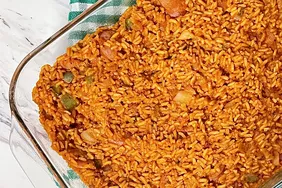

Pilau Recipe

- Rice
- Beef
- Masala
- Ginger
- Garlic
- If not using store-bought seasoning, double the portion of whole spices and use one half to prepare the pilau masala spice by roasting the whole spices namely, (cumin seeds, green cardamom pods, cinnamon sticks, black peppercorn, and cloves). Use a food processor or coffee grinder to grind this into pilau masala powder
- Next, transfer the rice to a bowl and clean it. Essentially, you want to fill the bowl about three-quarters way with water, run your hand through to stir, then drain. This is the initial rinse. Repeat this process about three times or until clean. The water should be translucent and not too cloudy. Fill the bowl with water again and allow the rice to soak.
- In a medium-sized pot, add the cubed stewing beef, salt, stock cube (optional) crushed garlic and ginger, two bay leaves, and enough water to cover the meat. Cover and allow to cook under medium heat for about 30 minutes, until the meat is tender. Use a sieve to sieve the meat then set the broth aside, to be used in cooking the pilau.
- Using the same pot, heat the cooking oil and add the beef and onions. Reduce the heat to low and fry for about 5 minutes, or until the onions are brown, stirring continuously so it does not burn. The meat will also brown up during this process.
Stir in the minced garlic and ginger, tomato paste soaked whole spices plus the liquid from soaking. Also, stir in the ground pilau masala and potatoes, then fry for two minutes.
Measure hot water and the broth previously retained from boiling the meat, using a measuring cup. The reserved broth and water should total five cups.
- Add the measured hot water and broth to the pot. Next, add the rice then increase the heat to a high, and cook uncovered for 7-8 minutes, until much but not all of the water has been absorbed. Check and add more salt if necessary.
Reduce the heat to low, cover the pot with aluminum foil or a lid and cook for a further 5 minutes, until all the liquid has been absorbed and the pilau rice is cooked through.
Allow it to sit for 5 minutes, before serving